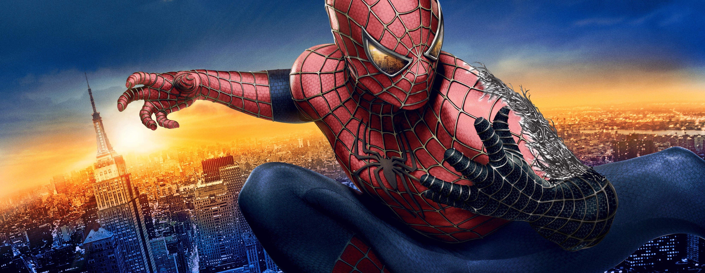

O Homem Aranha e a incerteza de qual caminho ele deve seguir
ele ajuda a salvar pessoas.
ele atrapalha as pessoas crescer e ser pessoas melhores
Nâo ele precisa voltar a ser do bem

Você decide continuar lendo sobre gestão emocional, ou inteligência Multifocal.
No final da sua reflexão, verás que gestão emocional é assumir o controle sobre os pensamentos, ideias e fantasias que circulam na mente.
Vai além do raciocínio lógico ou acadêmico: envolve autocrítica, empatia, criatividade, resiliência e consciência existencial.
É a capacidade de enxergar a vida sob diferentes perspectivas, conectando razão, emoção, memória e experiências.